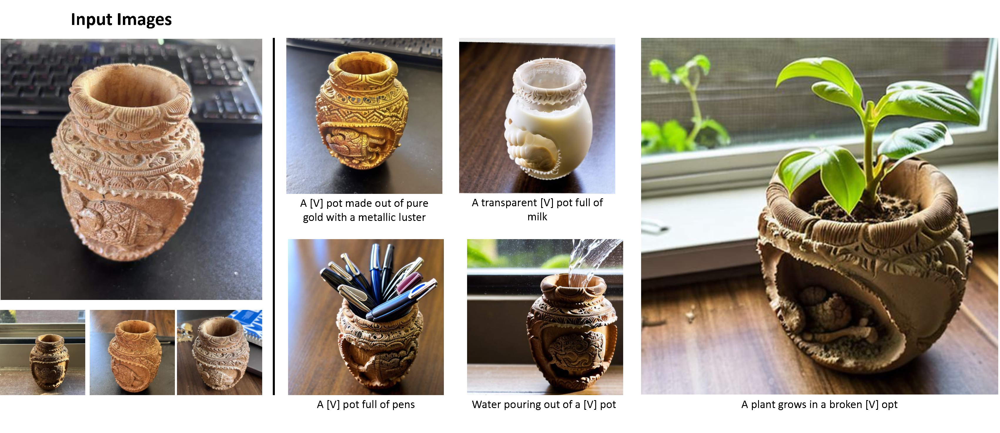
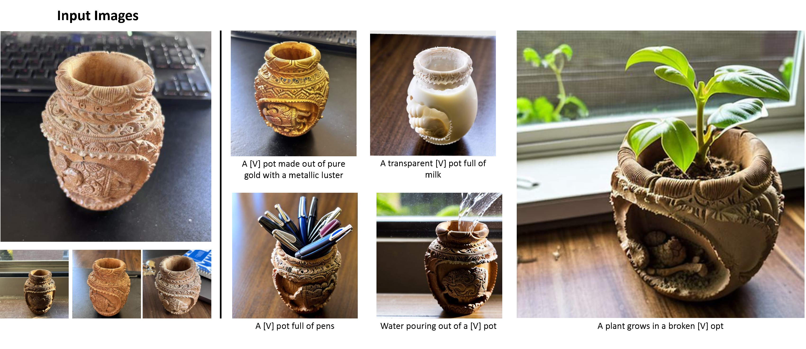

Recent advances in text-to-image models have enabled high-quality personalized image synthesis of user-provided concepts with flexible textual control. In this work, we analyze the limitations of two primary techniques in text-to-image personalization: Textual Inversion and DreamBooth. When integrating the learned concept into new prompts, Textual Inversion tends to overfit the concept, while DreamBooth often overlooks it. We attribute these issues to the incorrect learning of the embedding alignment for the concept. We introduce AttnDreamBooth, a novel approach that addresses these issues by separately learning the embedding alignment, the attention map, and the subject identity in different training stages. We also introduce a cross-attention map regularization term to enhance the learning of the attention map. Our method demonstrates significant improvements in identity preservation and text alignment compared to the baseline methods. Code will be made publicly available.

 


Textual Inversion and DreamBooth encounter distinct challenges when integrating the learned concept into novel prompts. For Textual Inversion, the generated images often excessively focus on the learned concept, overlooking other prompt tokens. To investigate this issue, we present the attention map visualization for different tokens. This visualization reveals an embedding misalignment issue in novel compositions containing the concept, leading to incorrect attention map allocations for other tokens. A typical example is shown where the attention map corresponding to the ``drawing'' token focuses on incorrect regions. This misalignment occurs because Textual Inversion tends to overfit the input embedding of the text encoder, responsible for managing the contextual understanding of the prompt.
Conversely, images generated by DreamBooth sometimes focus solely on other prompt tokens, neglecting the learned concept. This occurs because DreamBooth uses a rare token for the new concept while keeping its textual embedding fixed, thereby leading to insufficient learning of the embedding alignment for the new concept.
We propose a method named AttnDreamBooth, which separates the learning processes of the embedding alignment, the attention map, and the subject identity. Specifically, our approach consists of three main training stages. First, we optimize the textual embedding to learn the embedding alignment while preventing the risk of overfitting, which results in a coarse attention map for the new concept. Next, we fine-tune the cross-attention layers of the U-Net to refine the attention map. Lastly, we fine-tune the entire U-Net to capture the subject identity. Note that the text encoder remains fixed throughout all training stages to preserve its prior knowledge of contextual understanding.
Furthermore, we introduce a cross-attention map regularization term to enhance the learning of the attention map. Throughout the three training stages, we use a consistent training prompt, ``a photo of a [V] [super-category]'', where [V] and [super-category] denote the tokens for the new concept and its super-category, respectively. Our attention map regularization term encourages similarity between the attention maps of the new concept and its super-category.
BibTex Code Here